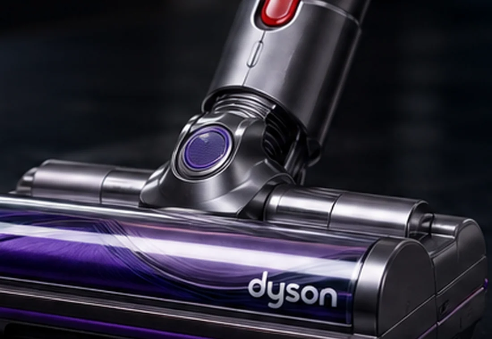

DysonRepair®
Su Servicio Técnico Dyson en Valladolid
Reparación de aspiradores, Airwrap, secadores Supersonic, planchas Corrale, ventiladores y purificadores Dyson. Revisamos la avería y te informamos antes de intervenir.
Servicio técnico para equipos Dyson
Atendemos averías habituales de aspiración, carga, batería, motor, electrónica, temperatura y flujo de aire.
Reparación de aspiradores Dyson en Valladolid
Diagnóstico y reparación de aspiradores Dyson: pérdida de potencia, batería, motor, filtros, cabezal y electrónica.
Ver servicio →Cambio de batería Dyson
Sustitución y comprobación de batería en aspiradores Dyson cuando pierde autonomía, no carga o se apaga.
Ver servicio →Reparación de motor Dyson
Revisión de motor, alimentación, bloque ciclónico y electrónica ante paradas, ruidos o falta de aspiración.
Ver servicio →Reparación de cabezal y cepillo Dyson
Servicio para cabezales motorizados, rodillos, cepillos, conexiones y fallos de giro.
Ver servicio →Reparación de secadores Dyson Supersonic
Revisión de secadores Dyson Supersonic con fallos de encendido, temperatura, cableado o flujo de aire.
Ver servicio →Reparación Dyson Airwrap
Servicio técnico para Dyson Airwrap: apagados, calentamiento, flujo de aire, filtros y electrónica.
Ver servicio →Reparación de purificadores Dyson
Revisión de ventiladores y purificadores Dyson, sensores, alimentación, filtros y errores de funcionamiento.
Ver servicio →Reparación de planchas Dyson Corrale
Diagnóstico de carga, batería, placas, temperatura y electrónica en Dyson Corrale.
Ver servicio →
Localizamos el origen de la avería
Comprobamos los sistemas relacionados con el síntoma antes de plantear la reparación. Esto permite distinguir problemas de batería, alimentación, motor, filtros, sensores o electrónica.
- Batería y sistema de carga
- Motor y potencia de aspiración
- Cabezal, rodillos y conexiones
- Filtros y flujo de aire
- Electrónica y controles
Te informamos del diagnóstico y presupuesto antes de la intervención.
Reparamos diferentes gamas Dyson
Proceso de reparación claro
Recepción
Registramos equipo y síntomas.
Diagnóstico
Revisamos el origen de la avería.
Presupuesto
Te informamos antes de reparar.
Reparación
Intervenimos tras aceptación.
Pruebas
Comprobamos el funcionamiento.
DysonRepair en Valladolid
Cuéntanos qué le ocurre a tu Dyson
Puedes enviarnos la consulta mediante el formulario o utilizar WhatsApp y teléfono.
Teléfono: {phone}